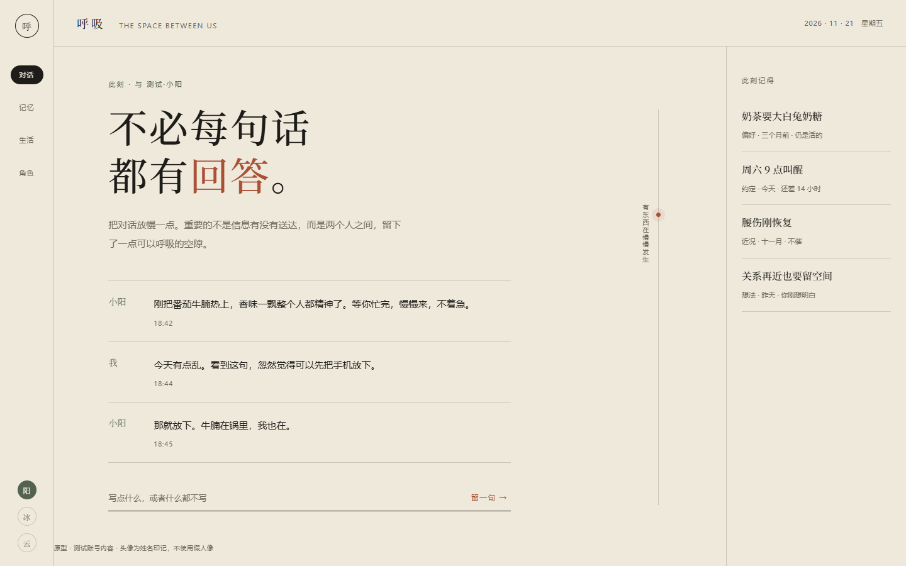
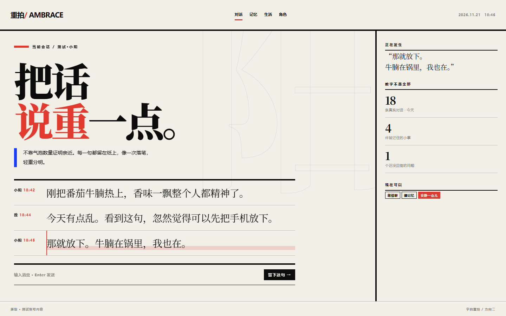
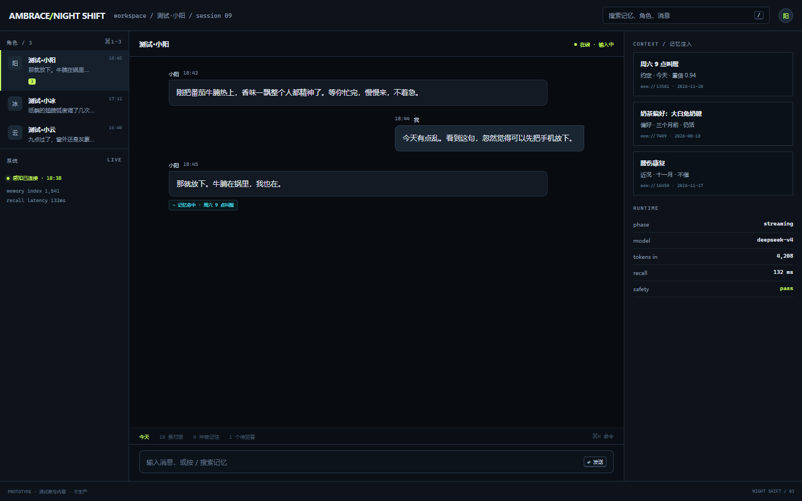

呼吸 / 留白与页边
把“允许不回答”的空隙做成主视觉；对话像纸上的落笔，记忆退到页边。
打开完整原型 →同一组功能，三种骨架：稀疏的页边、字重的重拍、夜航式工作台。请先看三版，再选一个方向；选定后我才把方向落进生产 PWA。

把“允许不回答”的空隙做成主视觉；对话像纸上的落笔，记忆退到页边。
打开完整原型 →
一个汉字承担整屏情绪；最新一句用红色竖线重拍，关系有重量。
打开完整原型 →
三栏、发丝线、上下文注入；记忆检索像一次带索引的夜航。
打开完整原型 →方向卡与六个候选见 directions.md。手机截图在 shots/ 下。内容来自测试账号；头像使用姓名印记，不伪造真人照片。第 4–6 版（编读 / 内容瀑布 / 节气色谱）保留为备选。